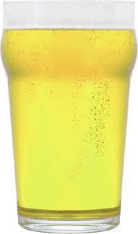
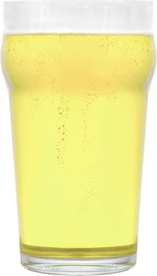
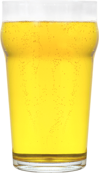
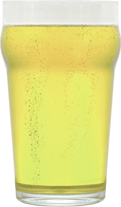

Знатоки античной истории утверждают, что упоминания пьянящего напитка из яблок встречаются ещё в летописях Древнего Рима.
В европейской традиции автором первого яблочного вина принято считать Карла Великого, который, присев на мешок перезревших яблок, и «изобрёл» сидр. Новый напиток пришёлся ко двору не только у короля франков и лангобардов. Сидр быстро набирал популярность и в средние века считался национальным напитком во всех городах западной Европы. Оно и понятно. В условиях средневековой антисанитарии куда надёжней было выпить кружку доброго сидра, чем хлебнуть водички.
У нас на Руси-матушке в те стародавние времена ни про какой сидр ведать не ведали, зато исправно готовили яблочный квас. А называть его сидром на французский или гишпанский манер начали, когда царь Пётр прорубил знаменитое «окно», из которого потянул первый модный сквозняк.
Так где же всё-таки родина яблочного сидра?
Можно сколь угодно долго дышать книжной пылью в архивах национальных библиотек по всей Европе, пытаясь воссоздать подлинную картину. Только дело это бессмысленное. Жирную точку в извечном споре французов, немцев и испанцев за право именоваться исторической родиной сидра, поставила Поднебесная. Сметливые китайцы начали пить яблочное вино лет этак за тысячу до нашей эры, во времена династии Шан, а то и Ся. Говорят, на то имеется у них подлинный манускрипт, впрочем, как и на все остальные изобретения человечества.
Однако именно в странах Европы напиток стал неотъемлемой частью национальной культуры: его активно используют в кулинарных рецептах (добавляют в соусы и маринады, тушат с ним мясо и овощи, используют для приготовления десертов и освежающих коктейлей), а осенью устраивают тематические праздничные фестивали в его честь.
Часть ли Европы мы в этом смысле или не часть, решать любителям аутентичного пития.
Марочные сидры из Санкт-Петербурга
Товарищество пиво-медоваренного завода не участвует в исторических дебатах, а просто готовит хороший сидр по классической рецептуре. Для варки сусла мы используем натуральный яблочный сок разных сортов из разных стран, а для создания неповторимого вкуса и тонкого аромата используем шампанские и винные дрожжи.
Товарищество пиво-медоваренного завода (ООО «ФАРТ СПБ») предлагает три основные марки яблочного сидра:
- «ДЖИНДЖЕР ХОРС ЭЙПЛ»;
- «КОРК СПИРИТ»;
- «МЭРИОН».
О вкусах мы тоже не спорим. Какой вариант напитка выбрать — сладкий, полусладкий, полусухой или сухой, наши покупатели решают сами, а мы с удовольствем предоставляем им такую возможность.
По запросу партнёров мы разрабатываем и производим сидры под частными торговыми марками.
Приглашаем потенциальных дистрибьюторов на дегустацию!